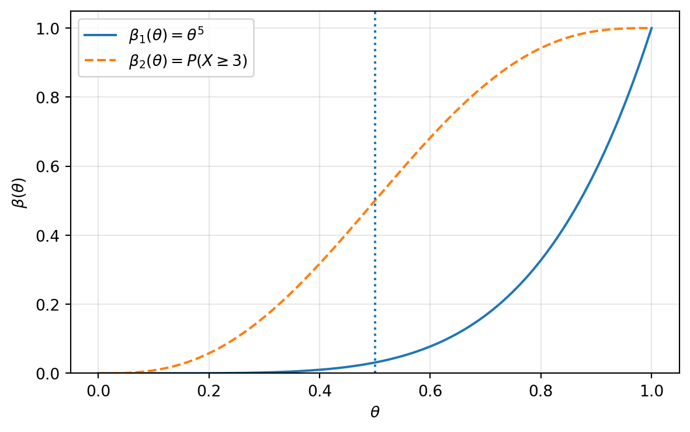

16 Chapter 15: Hypothesis Tests II — Evaluating Tests
This chapter explains how to evaluate and compare hypothesis tests after constructing them. The main ideas are Type I and Type II errors, power functions, test size and level, unbiased tests, uniformly most powerful tests, \(p\)-values, and risk functions.
NoteTopics
Evaluating hypothesis tests; Type I and Type II errors; power function; size and level; unbiased tests; uniformly most powerful tests; Neyman–Pearson lemma; binomial and normal UMP tests; \(p\)-values; loss functions; risk functions; decision-theoretic evaluation of tests.
17 Why We Need to Evaluate Tests
This section explains how to compare hypothesis tests after we have learned how to construct them.
In hypothesis testing, different methods may lead to different tests. A likelihood ratio test, a Bayesian test, a union-intersection test, and a classical test statistic can all be reasonable procedures. The key question is: how do we decide whether one test is better than another?
TipKey idea
Main idea Hypothesis tests are evaluated and compared through their probabilities of making mistakes. A good test should have small Type I error probability and small Type II error probability, subject to the unavoidable trade-off between the two.
The main evaluation tools in this section are:
the power function;
the size or significance level;
unbiasedness of tests;
uniformly most powerful tests;
risk functions and expected loss.
18 Two Types of Errors
This section reviews the two fundamental errors in hypothesis testing and introduces the power function as a unified way to measure them.
Consider a hypothesis test \[H_0: \theta\in \Theta_0 \qquad \text{versus} \qquad H_1: \theta\in \Theta_0^c.\] Let \(R\) be the rejection region of the test. The test rejects \(H_0\) when \(X\in R\) and fails to reject \(H_0\) when \(X\in R^c\).
18.1 Type I and Type II errors
This subsection defines the two ways a hypothesis test can be wrong.
NoteDefinition
Definition 1 (Type I and Type II errors). For the test \(H_0:\theta\in\Theta_0\) versus \(H_1:\theta\in\Theta_0^c\):
A Type I error occurs when \(\theta\in\Theta_0\) but the test rejects \(H_0\).
A Type II error occurs when \(\theta\in\Theta_0^c\) but the test fails to reject \(H_0\).
| Decision | \(H_0\) true | \(H_1\) true |
|---|---|---|
| Reject \(H_0\) | Type I error | Correct decision |
| Fail to reject \(H_0\) | Correct decision | Type II error |
For \(\theta\in\Theta_0\), the Type I error probability is \[\mathbb{P}_\theta(X\in R).\] For \(\theta\in\Theta_0^c\), the Type II error probability is \[\mathbb{P}_\theta(X\in R^c)=1-\mathbb{P}_\theta(X\in R).\]
18.2 Power function
This subsection introduces the main function used to evaluate a test over all parameter values.
NoteDefinition
Definition 2 (Power function). The power function of a hypothesis test with rejection region \(R\) is \[\beta(\theta):=\mathbb{P}_\theta(X\in R).\] Thus, \[\beta(\theta)= \begin{cases} \mathbb{P}_\theta(\text{Type I error}), & \theta\in\Theta_0,\\[3pt] 1-\mathbb{P}_\theta(\text{Type II error}), & \theta\in\Theta_0^c. \end{cases}\]
TipKey idea
Ideal power function The ideal test would have \[\beta(\theta)= \begin{cases} 0, & \theta\in\Theta_0,\\ 1, & \theta\in\Theta_0^c. \end{cases}\] This would mean no Type I errors and no Type II errors. In real problems, such a perfect test is usually impossible.
19 Power Function Examples
This section computes power functions for binomial and normal tests and shows the trade-off between Type I and Type II errors.
19.1 Binomial power functions
This subsection compares two tests for the same binomial hypothesis.
TipExample
Example 3 (Binomial power function: two tests). Let \[X\sim \operatorname{Binomial}(n=5,\theta),\] and consider \[H_0:\theta\le \frac12 \qquad \text{versus} \qquad H_1:\theta>\frac12.\] Compare the following two tests.
Test 1: reject \(H_0\) if \(X=5\).
The rejection region is \(R_1=\{5\}\), so the power function is \[\beta_1(\theta)=\mathbb{P}_\theta(X=5)=\theta^5.\] For \(\theta\le 1/2\), \[\beta_1(\theta)\le \left(\frac12\right)^5=\frac{1}{32}\approx 0.03125.\] Thus Test 1 has a small Type I error probability, but for values of \(\theta\) only moderately larger than \(1/2\), it has a large Type II error probability.
Test 2: reject \(H_0\) if \(X=3,4,\) or \(5\).
The rejection region is \(R_2=\{3,4,5\}\), so the power function is \[\beta_2(\theta)=\mathbb{P}_\theta(X=3,4,5) =\binom53\theta^3(1-\theta)^2+\binom54\theta^4(1-\theta)+\binom55\theta^5.\]
NoteSolution
The first test is conservative: it rejects only when all five trials are successes. Its Type I error probability is at most \(1/32\) under \(H_0\).
The second test rejects more often, so it has larger power for \(\theta>1/2\). However, it also has larger Type I error probability. At the boundary \(\theta=1/2\), \[\beta_2\left(\frac12\right) =\binom53\left(\frac12\right)^5+\binom54\left(\frac12\right)^5+\binom55\left(\frac12\right)^5 =\frac{10+5+1}{32}=\frac12.\] Thus Test 2 has much larger power but also much larger size. This illustrates the Type I–Type II error trade-off.
19.2 Normal power function
This subsection derives the power function of a one-sided normal mean test.
TipExample
Example 4 (Normal power function). Let \[X_1,\ldots,X_n\sim \operatorname{Normal}(\theta,\sigma^2),\] where \(\sigma^2\) is known. Test \[H_0:\theta\le \theta_0 \qquad \text{versus} \qquad H_1:\theta>\theta_0.\] Consider the test that rejects \(H_0\) if \[\frac{\bar X-\theta_0}{\sigma/\sqrt n}>c,\] where \(c>0\) is a constant.
NoteSolution
For any fixed \(\theta\), \[Z=\frac{\bar X-\theta}{\sigma/\sqrt n}\sim N(0,1).\] Thus the power function is \[\begin{aligned} \beta(\theta) &=\mathbb{P}_\theta\left(\frac{\bar X-\theta_0}{\sigma/\sqrt n}>c\right)\\ &=\mathbb{P}_\theta\left(\frac{\bar X-\theta}{\sigma/\sqrt n}>c+\frac{\theta_0-\theta}{\sigma/\sqrt n}\right)\\ &=1-\Phi\left(c+\frac{\theta_0-\theta}{\sigma/\sqrt n}\right). \end{aligned}\] Therefore, \[\beta(\theta_0)=1-\Phi(c).\] If \(c=1.28\), then \(\mathbb{P}(Z>1.28)\approx 0.10\), so the test has about a \(10\%\) significance level at the boundary \(\theta=\theta_0\).
The power function has the following behavior: \[\theta\to -\infty \implies \beta(\theta)\to 0, \qquad \theta\to +\infty \implies \beta(\theta)\to 1.\] For fixed sample size, decreasing Type I error usually increases Type II error, and increasing power usually increases Type I error.
19.3 Choosing sample size from power requirements
This subsection shows how power calculations determine a sample size.
TipExample
Example 5 (Choosing \(c\) and \(n\)). Let \[X_1,\ldots,X_n\sim \operatorname{Normal}(\theta,\sigma^2),\] with known \(\sigma^2\). Test \[H_0:\theta\le \theta_0 \qquad \text{versus} \qquad H_1:\theta>\theta_0\] using the rule \[\frac{\bar X-\theta_0}{\sigma/\sqrt n}>c.\] Choose \(c\) and \(n\) so that \[\mathbb{P}(\text{Type I error})\le 0.10, \qquad \mathbb{P}(\text{Type II error})\le 0.20\quad \text{if } \theta\ge \theta_0+\sigma.\]
NoteSolution
The Type I error is largest at the boundary \(\theta=\theta_0\). Hence we require \[\beta(\theta_0)=\mathbb{P}(Z>c)=0.10.\] Thus \[c=z_{0.10}\approx 1.28.\] Next, requiring Type II error at most \(0.20\) when \(\theta=\theta_0+\sigma\) is equivalent to requiring power at least \(0.80\): \[\beta(\theta_0+\sigma)=0.80.\] But \[\beta(\theta_0+\sigma) =\mathbb{P}\left(Z>c-\sqrt n\right).\] So \[\mathbb{P}\left(Z>1.28-\sqrt n\right)=0.80.\] Equivalently, \[1.28-\sqrt n=z_{0.80}^{\text{right tail}},\] where \(\mathbb{P}(Z>z_{0.80}^{\text{right tail}})=0.80\). Since \(z_{0.80}^{\text{right tail}}\approx -0.84\), \[1.28-\sqrt n\approx -0.84, \qquad \sqrt n\approx 2.12, \qquad n\approx 4.49.\] Therefore, choose \[\boxed{n=5.}\]
20 Size and Level of a Test
This section distinguishes the exact size of a test from the more flexible idea of a level-\(\alpha\) test.
20.1 Size and level
This subsection gives the formal definitions.
NoteDefinition
Definition 6 (Size-\(\alpha\) test). For \(\alpha\in[0,1]\), a test with power function \(\beta(\theta)\) is called a size \(\alpha\) test if \[\sup_{\theta\in\Theta_0}\mathbb{P}_\theta(\text{reject }H_0) =\sup_{\theta\in\Theta_0}\beta(\theta)=\alpha.\]
NoteDefinition
Definition 7 (Level-\(\alpha\) test). A test is called a level \(\alpha\) test if \[\sup_{\theta\in\Theta_0}\beta(\theta)\le \alpha.\]
ImportantRemark
Remark 8. A size-\(\alpha\) test uses the full Type I error budget exactly. A level-\(\alpha\) test may be conservative and use less than the allowed Type I error probability.
20.2 Size of likelihood ratio tests
This subsection explains how cutoffs are chosen for likelihood ratio tests.
For a likelihood ratio test with rejection region \[R=\{x:\lambda(x)\le c\},\] the size is \[\sup_{\theta\in\Theta_0}\mathbb{P}_\theta(\lambda(X)\le c).\] To obtain a size-\(\alpha\) LRT, choose \(c\) so that \[\sup_{\theta\in\Theta_0}\mathbb{P}_\theta(\lambda(X)\le c)=\alpha.\]
TipExample
Example 9 (Size-\(\alpha\) LRT for a normal mean). Suppose \(X_1, \ldots,X_n\sim N(\theta,\sigma^2)\) with known \(\sigma^2\), and test \[H_0:\theta=\theta_0 \qquad \text{versus} \qquad H_1:\theta\ne\theta_0.\] The LRT rejects for large values of \[\left|\frac{\bar X-\theta_0}{\sigma/\sqrt n}\right|.\] A size-\(\alpha\) test rejects \(H_0\) if \[\left|\frac{\bar X-\theta_0}{\sigma/\sqrt n}\right|>z_{\alpha/2},\] where \(\mathbb{P}(Z>z_{\alpha/2})=\alpha/2\) for \(Z\sim N(0,1)\).
NoteSolution
Under \(H_0\), \[Z=\frac{\bar X-\theta_0}{\sigma/\sqrt n}\sim N(0,1).\] Thus \[\mathbb{P}_{\theta_0}(|Z|>z_{\alpha/2})=\alpha.\] This is the classical two-sided \(Z\)-test. In LRT form, the cutoff is equivalent to \[c=\exp\left(-\frac{z_{\alpha/2}^2}{2}\right).\]
TipKey idea
Common critical values The following notation is standard: \[\begin{aligned} &z_\alpha: &&\mathbb{P}(Z>z_\alpha)=\alpha, \quad Z\sim N(0,1),\\ &t_{n-1,\alpha}: &&\mathbb{P}(T_{n-1}>t_{n-1,\alpha})=\alpha,\\ &\chi^2_{p,1-\alpha}: &&\mathbb{P}(\chi_p^2>\chi^2_{p,1-\alpha})=\alpha. \end{aligned}\]
21 Unbiased Tests
This section adapts the idea of unbiasedness from estimation to hypothesis testing.
NoteDefinition
Definition 10 (Unbiased test). A test with power function \(\beta(\theta)\) is called unbiased if \[\beta(\theta')\ge \beta(\theta'')\] for every \(\theta'\in\Theta_0^c\) and every \(\theta''\in\Theta_0\).
This means that the probability of rejecting \(H_0\) under the alternative should be at least as large as the probability of rejecting \(H_0\) under the null.
TipKey idea
Interpretation An unbiased test should not be more likely to reject \(H_0\) when \(H_0\) is true than when \(H_1\) is true. It should point in the correct direction.
TipExample
Example 11 (One-sided normal test is unbiased). Let \(X_1,\ldots,X_n\sim N(\theta,\sigma^2)\) with known \(\sigma^2\). Test \[H_0:\theta\le \theta_0 \qquad \text{versus} \qquad H_1:\theta>\theta_0\] by rejecting \(H_0\) when \[\frac{\bar X-\theta_0}{\sigma/\sqrt n}>c.\]
NoteSolution
The power function is \[\beta(\theta)=1-\Phi\left(c+\frac{\theta_0-\theta}{\sigma/\sqrt n}\right).\] This function is increasing in \(\theta\). Therefore, if \(\theta'>\theta_0\) and \(\theta''\le\theta_0\), then \[\beta(\theta')\ge \beta(\theta''),\] so the test is unbiased.
22 Uniformly Most Powerful Tests
This section introduces the strongest optimality criterion for hypothesis tests in a class of tests.
22.1 Most powerful and UMP tests
This subsection defines UMP tests.
A level-\(\alpha\) test guarantees that the Type I error probability is at most \(\alpha\) for all parameter values in the null. After controlling Type I error, we want to make Type II error small. Equivalently, we want the power function to be large under the alternative.
NoteDefinition
Definition 12 (Uniformly most powerful test). Let \(\mathcal C\) be a class of tests for \[H_0:\theta\in\Theta_0 \qquad \text{versus} \qquad H_1:\theta\in\Theta_0^c.\] A test in \(\mathcal C\) with power function \(\beta(\theta)\) is called a uniformly most powerful test in \(\mathcal C\) if \[\beta(\theta)\ge \beta'(\theta)\] for every \(\theta\in\Theta_0^c\) and for every competing power function \(\beta'(\theta)\) corresponding to another test in \(\mathcal C\).
ImportantRemark
Remark 13. UMP tests do not always exist, especially for two-sided alternatives. When they do exist, they provide a very strong optimality guarantee.
22.2 Neyman–Pearson lemma
This subsection gives the fundamental result for finding most powerful tests for simple hypotheses.
ImportantTheorem
Theorem 14 (Neyman–Pearson Lemma). Consider testing two simple hypotheses \[H_0:\theta=\theta_0 \qquad \text{versus} \qquad H_1:\theta=\theta_1.\] Let \(f(x\mid\theta_i)\) be the pdf or pmf of \(X\) under \(\theta_i\). Define a rejection region \(R\) by \[x\in R \quad \text{if} \quad f(x\mid\theta_1)>k f(x\mid\theta_0),\] and \[x\in R^c \quad \text{if} \quad f(x\mid\theta_1)<k f(x\mid\theta_0),\] for some constant \(k\ge0\), chosen so that \[\mathbb{P}_{\theta_0}(X\in R)=\alpha.\] Then any test with this rejection region is a most powerful level-\(\alpha\) test for testing \(H_0\) against \(H_1\).
NoteProof
Proof. The Neyman–Pearson lemma says that for a fixed Type I error probability, the best way to maximize power against the simple alternative \(\theta_1\) is to reject where the likelihood under \(H_1\) is large relative to the likelihood under \(H_0\). In other words, the test rejects when \[\frac{f(x\mid\theta_1)}{f(x\mid\theta_0)}>k.\] This is exactly the likelihood-ratio principle for simple hypotheses. The full proof compares the power of any competing level-\(\alpha\) test with the power of this likelihood-ratio test and uses the sign of \[f(x\mid\theta_1)-k f(x\mid\theta_0)\] on the rejection and non-rejection regions. ◻
TipKey idea
Likelihood-ratio form The Neyman–Pearson most powerful test rejects \(H_0\) for large values of \[\frac{f(x\mid\theta_1)}{f(x\mid\theta_0)}.\] This means that the observed data are much more likely under \(H_1\) than under \(H_0\).
23 UMP Examples
This section applies the Neyman–Pearson lemma to binomial and normal models.
23.1 UMP binomial test
This subsection works out a discrete example where boundary cases may require special attention.
TipExample
Example 15 (UMP binomial test). Let \[X\sim \operatorname{Binomial}(2,\theta).\] Test \[H_0:\theta=\theta_0=\frac12 \qquad \text{versus} \qquad H_1:\theta=\theta_1=\frac34.\] Compute the likelihood ratios for \(X\in\{0,1,2\}\).
NoteSolution
The pmf is \[f(x\mid\theta)=\binom{2}{x}\theta^x(1-\theta)^{2-x}.\] The likelihood ratio is \[\frac{f(x\mid 3/4)}{f(x\mid 1/2)}.\] For \(x=0\), \[\frac{f(0\mid 3/4)}{f(0\mid 1/2)} =\frac{(1/4)^2}{(1/2)^2}=\frac14.\] For \(x=1\), \[\frac{f(1\mid 3/4)}{f(1\mid 1/2)} =\frac{2(3/4)(1/4)}{2(1/2)(1/2)}=\frac34.\] For \(x=2\), \[\frac{f(2\mid 3/4)}{f(2\mid 1/2)} =\frac{(3/4)^2}{(1/2)^2}=\frac94.\] Thus the likelihood ratios are ordered as \[\frac14<\frac34<\frac94.\] By the Neyman–Pearson lemma, the most powerful test rejects first at \(X=2\), then at \(X=1\), then at \(X=0\), depending on the desired size.
For example:
If \(3/4<k<9/4\), reject \(H_0\) when \(X=2\). The size is \[\alpha=\mathbb{P}_{1/2}(X=2)=\frac14.\]
If \(1/4<k<3/4\), reject \(H_0\) when \(X=1\) or \(X=2\). The size is \[\alpha=\mathbb{P}_{1/2}(X=1\text{ or }2)=\frac34.\]
If \(k>9/4\), never reject \(H_0\), giving size \(0\).
If \(k<1/4\), always reject \(H_0\), giving size \(1\).
For the rejection rule \(R=\{2\}\), the power function is \[\beta(\theta)=\mathbb{P}_\theta(X=2)=\theta^2.\] For the rejection rule \(R=\{1,2\}\), the power function is \[\beta(\theta)=\mathbb{P}_\theta(X\ge1)=1-(1-\theta)^2.\]
23.2 UMP normal test
This subsection derives the one-sided most powerful normal test.
TipExample
Example 16 (UMP normal test). Suppose \[X_1,\ldots,X_n\sim \operatorname{Normal}(\theta,\sigma^2),\] where \(\sigma^2\) is known. Test \[H_0:\theta=\theta_0 \qquad \text{versus} \qquad H_1:\theta=\theta_1,\] where \(\theta_1<\theta_0\).
NoteSolution
The sample mean \(\bar X\) is sufficient for \(\theta\), and \[\bar X\sim \operatorname{Normal}\left(\theta,\frac{\sigma^2}{n}\right).\] The density of \(\bar X=t\) is \[g(t\mid \theta) =\frac{1}{\sqrt{2\pi\sigma^2/n}} \exp\left\{-\frac{n(t-\theta)^2}{2\sigma^2}\right\}.\] The Neyman–Pearson test rejects \(H_0\) when \[g(\bar X\mid\theta_1)>k g(\bar X\mid\theta_0).\] Taking logarithms, this inequality is equivalent to rejecting for small values of \(\bar X\), because \(\theta_1<\theta_0\). Hence the most powerful test has the form \[\text{Reject }H_0 \quad \text{if} \quad \bar X<c.\] To make this a level-\(\alpha\) test, choose \(c\) so that \[\alpha=\mathbb{P}_{\theta_0}(\bar X<c).\] Under \(H_0\), \[\bar X\sim \operatorname{Normal}\left(\theta_0,\frac{\sigma^2}{n}\right),\] so \[\boxed{c=\theta_0-\frac{\sigma}{\sqrt n}z_\alpha,}\] where \(\mathbb{P}(Z>z_\alpha)=\alpha\).
If instead \(\theta_1>\theta_0\), then the UMP test rejects for large values of \(\bar X\): \[\bar X>\theta_0+\frac{\sigma}{\sqrt n}z_\alpha.\]
24 \(p\)-Values
This section defines valid \(p\)-values and connects them to significance levels and rejection rules.
24.1 Definition and interpretation
This subsection explains why \(p\)-values summarize the strength of evidence against the null hypothesis.
A \(p\)-value is a test statistic that measures how surprising the observed data are if the null hypothesis is true. Small \(p\)-values provide evidence in favor of the alternative hypothesis.
NoteDefinition
Definition 17 (Valid \(p\)-value). A statistic \(p(X)\) is a valid \(p\)-value if, for every \(\theta\in\Theta_0\) and every \(0\le \alpha\le 1\), \[\mathbb{P}_\theta(p(X)\le \alpha)\le \alpha.\]
ImportantRemark
Remark 18. A \(p\)-value is not the probability that \(H_0\) is true. It is a probability computed under the assumption that \(H_0\) is true.
Equivalently, the \(p\)-value can be understood as the smallest significance level at which the observed test statistic would lead to rejection: \[p(x)=\inf\{\alpha:\text{ reject }H_0\text{ at level }\alpha\}.\]
24.2 General construction of a \(p\)-value
This subsection gives a general formula for a valid \(p\)-value.
ImportantTheorem
Theorem 19 (General \(p\)-value formula). Let \(W(X)\) be a test statistic such that large values of \(W\) provide evidence in favor of \(H_1\). Then \[p(x):=\sup_{\theta\in\Theta_0}\mathbb{P}_\theta\left(W(X)\ge W(x)\right)\] defines a valid \(p\)-value.
NoteProof
Proof. The quantity \(p(x)\) is the largest null probability of observing a test statistic at least as extreme as the observed statistic. Therefore, for any \(\theta\in\Theta_0\), the probability that this tail probability is at most \(\alpha\) is no larger than \(\alpha\). Hence \[\mathbb{P}_\theta(p(X)\le\alpha)\le\alpha,\] which is the validity condition. ◻
TipKey idea
Interpretation A \(p\)-value answers the question: \[\text{How surprising is my observed signal, if the null hypothesis were true?}\] The smaller the \(p\)-value, the stronger the evidence against \(H_0\).
24.3 One-sided normal \(p\)-value
This subsection computes a standard \(p\)-value for a one-sided normal test.
TipExample
Example 20 (One-sided normal \(p\)-value). Let \(X_1,\ldots,X_n\sim \operatorname{Normal}(\mu,\sigma^2)\) with \(\sigma\) known. Test \[H_0:\mu\le \mu_0 \qquad \text{versus} \qquad H_1:\mu>\mu_0.\] Use the statistic \[W(X)=Z=\frac{\bar X-\mu_0}{\sigma/\sqrt n}.\] Find the \(p\)-value.
NoteSolution
Large values of \(Z\) favor \(H_1\). For any \(\mu\le\mu_0\), \[\begin{aligned} \mathbb{P}_\mu(W\ge w) &=\mathbb{P}_\mu\left(\frac{\bar X-\mu_0}{\sigma/\sqrt n}\ge w\right)\\ &=\mathbb{P}_\mu\left(\frac{\bar X-\mu}{\sigma/\sqrt n}\ge w+\frac{\mu_0-\mu}{\sigma/\sqrt n}\right). \end{aligned}\] The right tail probability is largest when \(\mu=\mu_0\). Hence the supremum over \(\Theta_0=\{\mu:\mu\le\mu_0\}\) is attained at \(\mu=\mu_0\).
If \[z_{\mathrm{obs}}=\frac{\bar x-\mu_0}{\sigma/\sqrt n},\] then the valid \(p\)-value is \[\boxed{p(x)=\mathbb{P}_{\mu_0}(Z\ge z_{\mathrm{obs}})=1-\Phi(z_{\mathrm{obs}}).}\]
TipExample
Example 21 (Numerical \(p\)-value). Suppose \(z_{\mathrm{obs}}=2.1\) in the one-sided normal test above. Compute the \(p\)-value and state the decision at levels \(\alpha=0.05\) and \(\alpha=0.01\).
NoteSolution
The one-sided \(p\)-value is \[p=1-\Phi(2.1)\approx 0.0179.\] At \(\alpha=0.05\), since \(0.0179<0.05\), reject \(H_0\).
At \(\alpha=0.01\), since \(0.0179>0.01\), fail to reject \(H_0\).
25 Loss and Risk Functions for Tests
This section treats hypothesis testing as a decision problem with possible costs for different mistakes.
25.1 Decision-theoretic formulation
This subsection introduces actions, loss functions, and risk functions for hypothesis testing.
In hypothesis testing, there are two possible actions: \[a_0=\text{fail to reject }H_0, \qquad a_1=\text{reject }H_0.\] A decision rule \(\delta(x)\) selects an action based on the observed data \(x\).
NoteDefinition
Definition 22 (Loss function). A loss function \[L:\Theta\times \mathcal A\to \mathbb{R}\] measures the penalty for taking action \(a\in\mathcal A\) when the true parameter is \(\theta\).
TipExample
Example 23 (0–1 loss). For testing \(H_0:\theta\in\Theta_0\) versus \(H_1:\theta\in\Theta_0^c\), the ordinary 0–1 loss is \[L(\theta,a)= \begin{cases} 0, & \theta\in\Theta_0\text{ and }a=a_0,\text{ or }\theta\in\Theta_0^c\text{ and }a=a_1,\\ 1, & \theta\in\Theta_0\text{ and }a=a_1,\text{ or }\theta\in\Theta_0^c\text{ and }a=a_0. \end{cases}\]
NoteSolution
The loss is \(0\) for a correct decision and \(1\) for an incorrect decision. Thus both Type I and Type II errors are treated as equally costly.
25.2 Generalized 0–1 loss
This subsection allows Type I and Type II errors to have different costs.
NoteDefinition
Definition 24 (Generalized 0–1 loss). Let \(c_I\) be the cost of a Type I error and \(c_{II}\) be the cost of a Type II error. Define \[L(\theta,a_0)= \begin{cases} 0, & \theta\in\Theta_0,\\ c_{II}, & \theta\in\Theta_0^c, \end{cases} \qquad L(\theta,a_1)= \begin{cases} c_I, & \theta\in\Theta_0,\\ 0, & \theta\in\Theta_0^c. \end{cases}\]
If \(c_I=c_{II}=1\), this reduces to the ordinary 0–1 loss. If \(c_I\ne c_{II}\), the test should account for the relative seriousness of the two errors.
25.3 Risk function
This subsection defines risk as the expected loss of a test.
NoteDefinition
Definition 25 (Risk function). The risk function of a decision rule \(\delta\) is \[R(\theta,\delta)=\mathbb{E}_\theta[L(\theta,\delta(X))].\]
Let the power function be \[\beta(\theta)=\mathbb{P}_\theta(\delta(X)=a_1),\] the probability of rejecting \(H_0\) under parameter \(\theta\). Under generalized 0–1 loss, \[R(\theta,\delta)= \begin{cases} c_I\beta(\theta), & \theta\in\Theta_0,\\[3pt] c_{II}\{1-\beta(\theta)\}, & \theta\in\Theta_0^c. \end{cases}\]
TipKey idea
Risk interpretation For \(\theta\in\Theta_0\), the risk is the Type I error probability weighted by the cost \(c_I\). For \(\theta\in\Theta_0^c\), the risk is the Type II error probability weighted by the cost \(c_{II}\).
26 Risk Function Example
This section computes the risk function for a one-sided normal test.
TipExample
Example 26 (Normal one-sided test risk). Let \[X_1,\ldots,X_n\stackrel{iid}{\sim} N(\theta,\sigma^2), \qquad \sigma=1, \qquad n=25.\] Test \[H_0:\theta\le 0 \qquad \text{versus} \qquad H_1:\theta>0.\] Use the size \(\alpha=0.05\) test that rejects \(H_0\) when \[\bar X>z_{1-\alpha}\frac{\sigma}{\sqrt n}.\] Take \(c_I=2\) and \(c_{II}=1\). Compute the power function and risk function.
NoteSolution
Here \[z_{1-\alpha}=z_{0.95}\approx 1.645, \qquad \frac{\sigma}{\sqrt n}=\frac15.\] So the rejection rule is \[\bar X>1.645\cdot \frac15=0.329.\] For a general \(\theta\), \[\bar X\sim N\left(\theta,\frac1{25}\right).\] Thus the power function is \[\begin{aligned} \beta(\theta) &=\mathbb{P}_\theta(\bar X>0.329)\\ &=\mathbb{P}\left(\frac{\bar X-\theta}{1/5}>\frac{0.329-\theta}{1/5}\right)\\ &=1-\Phi(1.645-5\theta). \end{aligned}\] Under the generalized 0–1 loss with \(c_I=2\) and \(c_{II}=1\), \[R(\theta)= \begin{cases} 2\beta(\theta), & \theta\le 0,\\[3pt] 1-\beta(\theta), & \theta>0. \end{cases}\]
TipExample
Example 27 (Numerical risk values). Using the previous example, compute the risk at \(\theta=0,-0.2,0.2,0.5\).
NoteSolution
The power function is \[\beta(\theta)=1-\Phi(1.645-5\theta).\] At the boundary \(\theta=0\), \[\beta(0)=0.05, \qquad R(0)=2(0.05)=0.10.\] At \(\theta=-0.2\), \[\beta(-0.2)=1-\Phi(1.645+1)=1-\Phi(2.645)\approx 0.0041,\] so \[R(-0.2)=2(0.0041)=0.0082.\] At \(\theta=0.2\), \[\beta(0.2)=1-\Phi(1.645-1)=1-\Phi(0.645)\approx 0.260.\] Since \(\theta>0\), \[R(0.2)=1-\beta(0.2)\approx 0.740.\] At \(\theta=0.5\), \[\beta(0.5)=1-\Phi(1.645-2.5)=1-\Phi(-0.855)=\Phi(0.855)\approx 0.803.\] Thus \[R(0.5)=1-0.803=0.197.\]
WarningImportant lesson
Important lesson The risk can be small under parts of the null and large near the alternative boundary. The shape of the risk function depends on both the power function and the relative costs \(c_I\) and \(c_{II}\).
27 Practice Problems
This section gives practice problems that reinforce the main definitions and calculations from the section.
CautionPractice Problem
Practice Problem 28 (Power function for a binomial test). Let \(X\sim\operatorname{Binomial}(6,\theta)\) and test \[H_0:\theta\le \frac12 \qquad \text{versus} \qquad H_1:\theta>\frac12.\] Consider the test that rejects \(H_0\) if \(X\ge5\).
Find the power function.
Find the size of the test.
Find the Type II error probability when \(\theta=0.8\).
NoteSolution
(a) The rejection region is \(R=\{5,6\}\), so \[\beta(\theta)=\mathbb{P}_\theta(X\ge5) =\binom65\theta^5(1-\theta)+\binom66\theta^6 =6\theta^5(1-\theta)+\theta^6.\] (b) Since \(\beta(\theta)\) is increasing in \(\theta\), the size is attained at \(\theta=1/2\): \[\alpha=\beta(1/2)=6\left(\frac12\right)^5\left(\frac12\right)+\left(\frac12\right)^6 =\frac{6+1}{64}=\frac7{64}.\] (c) At \(\theta=0.8\), \[\beta(0.8)=6(0.8)^5(0.2)+(0.8)^6.\] The Type II error probability is \[1-\beta(0.8)=1-\{6(0.8)^5(0.2)+(0.8)^6\}.\] Numerically, this is approximately \(0.3446\).
CautionPractice Problem
Practice Problem 29 (Normal sample size). Let \(X_1,\ldots,X_n\sim N(\theta,\sigma^2)\) with known \(\sigma^2\). Test \[H_0:\theta\le\theta_0 \qquad \text{versus} \qquad H_1:\theta>\theta_0\] using a level \(0.05\) test. Find a formula for the smallest \(n\) such that the power is at least \(0.90\) when \(\theta=\theta_0+\Delta\), where \(\Delta>0\).
NoteSolution
The level \(0.05\) test rejects when \[\frac{\bar X-\theta_0}{\sigma/\sqrt n}>z_{0.05}.\] At \(\theta=\theta_0+\Delta\), the power is \[\beta(\theta_0+\Delta) =1-\Phi\left(z_{0.05}-\frac{\Delta\sqrt n}{\sigma}\right).\] We require \[1-\Phi\left(z_{0.05}-\frac{\Delta\sqrt n}{\sigma}\right)\ge 0.90.\] Equivalently, \[\Phi\left(z_{0.05}-\frac{\Delta\sqrt n}{\sigma}\right)\le0.10.\] Thus \[z_{0.05}-\frac{\Delta\sqrt n}{\sigma}\le z_{0.90}^{\text{right tail}},\] where \(\mathbb{P}(Z>z_{0.90}^{\text{right tail}})=0.90\), so \(z_{0.90}^{\text{right tail}}\approx -1.2816\). Hence \[\sqrt n\ge \frac{\sigma}{\Delta}(z_{0.05}+1.2816).\] Therefore \[\boxed{n\ge \left(\frac{\sigma}{\Delta}(z_{0.05}+1.2816)\right)^2.}\] The smallest integer \(n\) is the ceiling of the right-hand side.
CautionPractice Problem
Practice Problem 30 (One-sided normal p-value). Let \(X_1,\ldots,X_{25}\sim N(\mu,4)\) and test \[H_0:\mu\le 10 \qquad \text{versus} \qquad H_1:\mu>10.\] Suppose \(\bar x=10.9\). Compute the \(p\)-value and state the decision at \(\alpha=0.05\).
NoteSolution
Here \(\sigma=2\) and \(n=25\), so \(\sigma/\sqrt n=2/5=0.4\). The observed test statistic is \[z_{\mathrm{obs}}=\frac{10.9-10}{0.4}=2.25.\] The one-sided \(p\)-value is \[p=1-\Phi(2.25)\approx 0.0122.\] Since \(0.0122<0.05\), reject \(H_0\) at the \(5\%\) level.
CautionPractice Problem
Practice Problem 31 (Risk function). For the one-sided normal test in the previous problem, use generalized 0–1 loss with \(c_I=3\) and \(c_{II}=1\). Write the risk function in terms of the power function.
NoteSolution
The decision is to reject or fail to reject \(H_0:\mu\le10\). The risk function is \[R(\mu,\delta)= \begin{cases} 3\beta(\mu), & \mu\le 10,\\[3pt] 1-\beta(\mu), & \mu>10. \end{cases}\] where \[\beta(\mu)=\mathbb{P}_\mu(\text{reject }H_0).\] For a level-\(0.05\) test, \[\beta(\mu)=1-\Phi\left(z_{0.05}+\frac{10-\mu}{2/5}\right).\]
28 Summary
This section summarizes the main concepts used to evaluate hypothesis tests.
| Concept | Definition | Meaning |
|---|---|---|
| Power function | \(\beta(\theta)=\mathbb{P}_\theta(X\in R)\) | Probability of rejecting \(H_0\) at parameter value \(\theta\) |
| Type I error | \(\mathbb{P}_\theta(X\in R)\) for \(\theta\in\Theta_0\) | Rejecting \(H_0\) when \(H_0\) is true |
| Type II error | \(1-\beta(\theta)\) for \(\theta\in\Theta_0^c\) | Failing to reject \(H_0\) when \(H_1\) is true |
| Size | \(\sup_{\theta\in\Theta_0}\beta(\theta)\) | Worst-case Type I error probability |
| Level \(\alpha\) | \(\sup_{\theta\in\Theta_0}\beta(\theta)\le\alpha\) | Type I error controlled by \(\alpha\) |
| Unbiased test | \(\beta(\theta')\ge\beta(\theta'')\) for \(\theta'\in\Theta_0^c\), \(\theta''\in\Theta_0\) | Rejects more often under the alternative than under the null |
| UMP test | Maximizes power for all \(\theta\in\Theta_0^c\) within a class | Strong optimality criterion |
| \(p\)-value | Smallest level at which \(H_0\) is rejected | Measures evidence against \(H_0\) |
| Risk function | \(R(\theta,\delta)=\mathbb{E}_\theta[L(\theta,\delta(X))]\) | Expected loss of a test |
TipKey idea
Key message A hypothesis test is not evaluated by whether it is correct on one dataset. It is evaluated by its long-run error probabilities, its power function, and, when costs matter, its risk function.